Free
computer Tutorials
|
Free
computer Tutorials
|
|
 back back |
Stay at Home and Learn | ||||
The Windows 7 TaskbarThe taskbar is the thin strip that runs across the bottom of your screen. It is split into a number of different areas: a round Start button, Quick Launch icons, a notification area, and a clock. All other areas are the Taskbar itself. The image below shows where the different areas are: 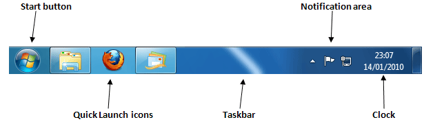 The Start button is explained in a section all of its own, as it's probably the most important area of the Taskbar. Click here to go the Start button page: There is one more area on the Taskbar, and it's easily
overlooked - the Show Desktop button. In the images above, you can just
see a narrow rectangle to the right of the clock: 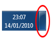 Click this button to minimize all open programmes and reveal the desktop.
Quick Launch IconsIn the main image above, take a look at the three big icons to the right of the round Start button. These are quick launch icons, meaning you can quickly launch any of the programmes you see there. When you hold your mouse over one of the icons, you'll see a small popup rectangle that shows you a preview of any open windows. In the image below, we're holding our mouse over the Firefox icon. (Firefox is a web browser used to display internet pages. It's Internet Explorer's main competitor.) In Windows Vista, however, the icons will be smaller, and there's no popup. 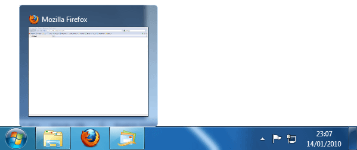 Click on the preview window and it opens the programme up in full screen. There are several ways to add new programmes to the Quick Launch area, but Windows 7 makes it a lot easier. Open up a programme using the Start menu. When it's open, use the right mouse button to click its icon in the Taskbar. A new menu appears: 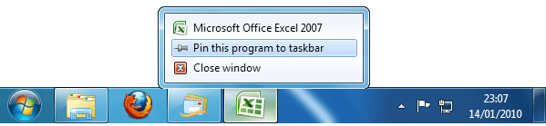 In the image above, we have Microsoft Excel open. Right-clicking its icon in the Taskbar gave us the above menu. Once "Pin this program to the taskbar" is clicked with the left mouse button, it will appear permanently in the Quick Launch arrear. If you want to get rid of any Quick Launch programmes, the item on the menu will say "Unpin this program from the taskbar" when you right-click. You can also use the Start menu to add programmes to the
Quick Launch area. Again, right-click the programme you want to add.
From the menu, select "Pin to Taskbar". In the image below,
we're adding Notepad as a Quick Launch icon: 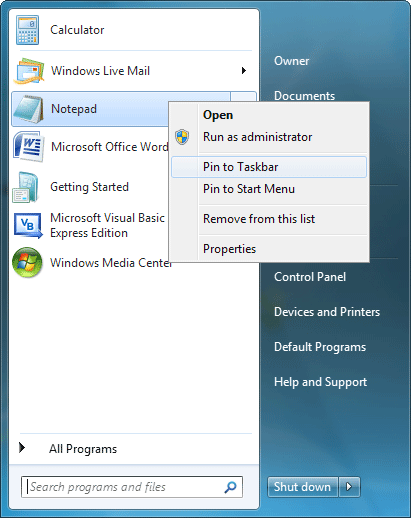 The result is a new icon in the Quick Launch area: 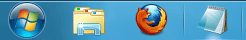
Notification Area(NOTE: The Notification area saw a big change from Windows Vista to Windows 7. You should recognise a lot of the icons below, however, if you have Vista.) The Notification area, formally called the System Tray, is the area of the Taskbar where you can view programmes and tasks that are running in the background, as well as view important messages about updating your computer. (Although the clock is considered part of the Notification area, we'll look at this separately.) In the image below, the Notification area shows three
icons: 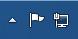 The first one, the white arrow, is for hidden icons. Click the white arrow to see which icons have been hidden: 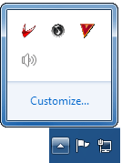 Probably the only one of the four icons above that you'll have is the speaker icon. This sets the volume for your speakers. If yours is too low, click the speaker icon to see a slider that you can move up and down: 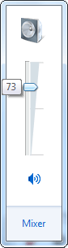 The second of the three icons in the Notification area is a white flag. This flag alerts you to issues that need to be taken care of. Click the flag icon to see if there are any problems: 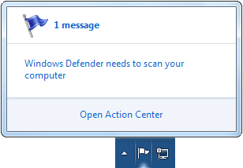 As you can see, Windows 7 is telling us that there is 1 message, and that it's to do with Windows Defender. You can click on the "1 message" heading at the top, or on the message itself. You can also open the "Action Center" from here. The third icon that appears in the Notification area (on our computer, anyway) is a Network icon. This tells us that we have an internet connection, and there are no problems. If the internet access is down, there will be a red X through this icon: 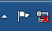 The red X will disappear when the problem with the internet is solved. In the next part, we'll take a look at the Windows 7 clock, and the date and time.
The Date and Time in Windows 7 >> |
|||||
|